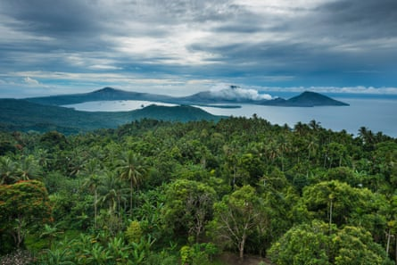
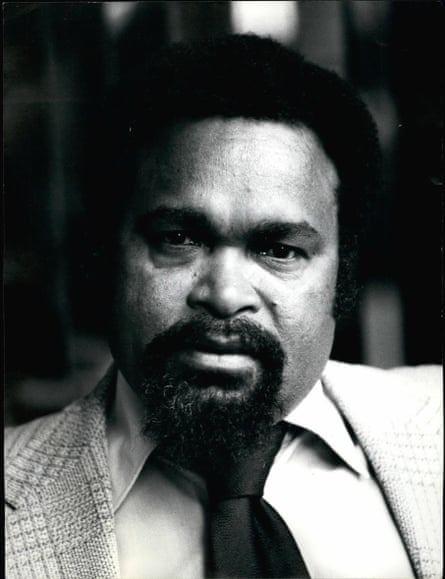
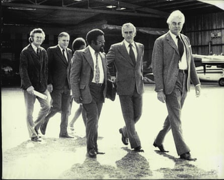
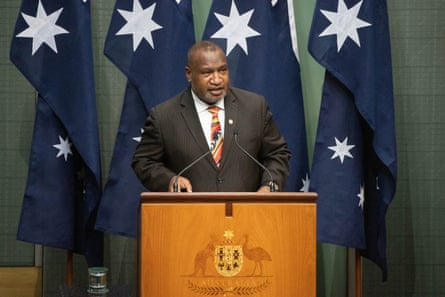
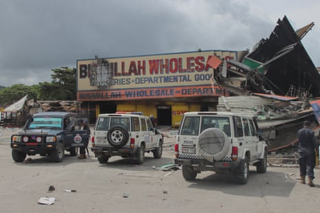
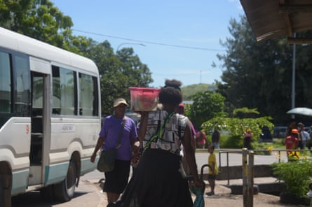
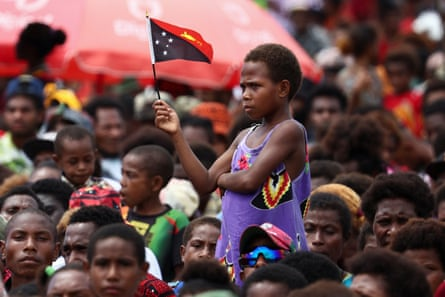

In the early 1970s, Dame Meg Taylor remembers a sense of immense optimism as Papua New Guinea stood on the brink of independence. At that time she joined the staff of Sir Michael Somare, who would later become the country’s first prime minister.
“There was a lot of hope,” said Taylor, diplomat and former secretary general of the Pacific Islands Forum.
“I still have very wonderful memories of sitting out on the old steps of the office … just thinking, ‘What have we got ourselves into, and what an amazing opportunity that we have to build a country’.”
Now, as Papua New Guinea prepares to mark 50 years of independence from Australia, Taylor and other prominent figures reflect on a nation failing to live up to its promise. The Guardian interviewed dozens of people from across Papua New Guinea – including a former prime minister, ex-military commander and constitutional architect – and the Pacific for this series on the nation at 50.
They paint a picture of a country struggling to control violence and lawlessness, and divided on the path forward. The conversations revealed law and order, leadership and access to essential services as the biggest challenges facing the country of nearly 12 million people . They shared differing views on how to address social problems and what role Australia – its nearest neighbour and former colonial administrator – should play. Many highlighted the resilience of the population and expressed optimism about the future.
New Britain island, Papua New Guinea.Photograph: Marc Dozier/Getty Images
Peter O’Neill, who led Papua New Guinea from 2011 to 2019, said the founding fathers would not approve of “the way the country has been managed.”
“I know that they would’ve been very disappointed that we have lost our way,” O’Neill told the Guardian.
“We have been blessed with a beautiful country with a lot of resources and beautiful people. All we need to do is manage ourselves in a better way,” O’Neill said.
‘This is just the beginning’
Papua New Guinea was administered by Australia as a single territory from 1945 . The territory included the former British protectorate of Papua and the former German colony of New Guinea. In 1972, Gough Whitlam promised that if elected Australia’s prime minister, he would begin the transition to self-governance . He followed through on the pledge and on 16 September 1975, Papua New Guinea was granted independence. In a late night radio address that evening, Somare told the new nation : “I wish to remind all that this is just the beginning. Now we must stand on our own two feet and work harder than ever before. We are indeed masters of our own destiny.”
Sir Michael Somare served as prime minister of Papua New Guinea for a total of 17 years, over four terms.Photograph: Keystone Press/Alamy
Five decades on, Papua New Guinea is the largest Pacific nation after Australia with a young and growing population. About 40% live below the poverty line and in parts of the country, crime and violence are rampant. Many lack access to basic health services and education. Child mortality rates are ten times higher than Australia’s.
Rich with gold, copper, oil and gas, minerals and energy extraction account for most of Papua New Guinea’s export earnings. But this abundance has proved both a blessing and a curse , and its natural wealth has brought conflict, unrest and division. Corruption is rife. Poor infrastructure holds the economy back and young people across the country lack opportunity.
O’Neill believes independence was given to Papua New Guinea “too soon”. He says not enough was done by the Australian colonial administrators to develop education and infrastructure in the country before they left.
Now, he points to mismanagement by leaders, inadequate policing and crime and violence as some of its biggest development challenges.
“Enforcement of the rule of law is absolutely nonexistent,” O’Neill said.
The sentiment is echoed by current prime minister James Marape, who last year said “the greatest impediment facing us today is a lack of respect for our country’s law.”
In a speech to the University of Papua New Guinea , Marape said if asked to rate the country’s progress since independence on a scale of one to ten, “I would not go past three.”
Marape did not respond to requests for an interview. Leader of the opposition Douglas Tomuriesa told the Guardian internal security has overtaken health and education as Papua New Guinea’s most urgent challenge. He argues the general breakdown in law and order reflects deep structural issues, including scarce opportunities for young people, “weak enforcement of justice and an under-resourced police force.”
“Limited trust in justice systems have left many communities feeling abandoned,” Tomuriesa said.
Seen here in Mascot, NSW, in 1974: Australia’s prime minister Gough Whitlam, chief minister of New Guinea, Michael Somare. Australia’s leader of the opposition Bill Snedden, Sir John Bunting, and president of the ACTU, Bob Hawke.Photograph: Fairfax Media Archives/Fairfax Media/Getty Images
Papua New Guinea prime minister James Marape.Photograph: Mike Bowers/The Guardian
This has been most evident with the escalation of violence in the central and western Highlands regions. In recent years, fighting between tribes has devastated families and ruined local economies. Police in Enga province, in the Highlands region, told the Guardian hundreds of people are estimated to have been killed in conflicts this year.
Deeply rooted in historical contests over land, disputes are governed by customs and beliefs that stretch back generations. Yet fighting has become more deadly as an influx of high-powered firearms transformed traditional conflicts into fatal confrontations. Retired Maj Gen Jerry Singirok, commander of the Papua New Guinea defence force during the 1990s, said gun violence has overtaken all other crimes. He said there is no government oversight of the use of illegal guns and it is “crippling the nation.”
Outside Porgera, in Enga province, village leader Tomaiti Hando said his community had been devastated by violence.
“We’ve lost fathers, brothers and sons, and now I watch my grandsons growing up in this same violence,” Hando said. He called on Australia to help bring an end to the troubles in the Highlands.
“I want it to end for good and I hope that Australia can step in and address this. Australia is our big brother, our leaders have not been able to address this issue for decades,” Hando said, adding that tackling the root causes of conflicts are essential for “lasting peace and stability.”
Police work at the site of a damaged building in Port Moresby in January 2024.Photograph: Darrell Toll/AFP/Getty Images
Gender equality is a significant challenge in Papua New Guinea, women are vastly underrepresented in parliament, have less access to health and education and face a high risk of violence. Two-thirds of women in Papua New Guinea will experience violence in their lifetime. Ruth Kissam – one of the country’s leading human rights activists – describes the harm to women and girls as a “systemic failure to protect our most vulnerable.”
“We are talking about a pandemic within our homes and communities. The reality is that for many women in Papua New Guinea, violence is a daily experience, not an isolated event,” said Kissam.
Many say limited opportunities for the surging youth population has contributed to unrest and violence. They point to access to education as a crucial plank of development. Taylor said without education “you’re going to have people who don’t have hope.”
Papua New Guinea has a young and growing population.Photograph: Andrew KUTAN/The Guardian
A report published by the World Bank in 2024 estimated 72% of ten-year-olds are unable to read, and only 18% of 20-to 24-year-olds have completed secondary or tertiary education. More investment in education is “critical” to Papua New Guinea’s economic future and could turn its young population into an “engine of growth,” the report said.
Singirok also highlighted the need to lift education levels among younger generations, and said Papua New Guinea must invest to “not only teach the core subjects but ethics, religion and all aspects of life where they are taught to live in harmony with others.”
More power to provinces
To confront challenges, former and current politicians called for local communities to be given more control of their affairs.
John Momis is one of the country’s constitutional fathers and former president of Bougainville. He argues too much power resides in the capital Port Moresby, and not in the villages and towns where so many live.
The 83-year-old is a respected politician who spent decades in the national parliament. In 1972, he was elected to parliament and Somare asked him to help lead the constitutional planning committee.
“Papua New Guinea was so highly diversified, we had 800 languages, the biggest number of languages in the whole world. The best way of uniting a highly diversified country is through decentralisation, giving power to the different provinces,” Momis said from his home in Bougainville.
“The problem today is the national government has monopolised power again. And they’re just providing services to the poor people in the provinces,” he said.
Australia remains the country’s biggest aid partner. In 2024-25, Canberra provided an estimated $637.4m in official development assistance (ODA). Over the last decade, Australia has provided about $6.2bn in ODA funding to Papua New Guinea.
Momis cautions that Australia “should not just give to Papua New Guinea when they beg.”
“People must be both subjects and objects of development. People must drive development,” Momis said.
Tomuriesa, an MP for a district in Milne Bay province, said Australia can assist in rebuilding capacity in policing, governance, health and education.
“But aid must align with local priorities, and be delivered with transparency and accountability,” he said.
Looking ahead, Tomuriesa draws optimism from “our people’s resilience”. He said young people are eager to learn, small business sector is growing and women are stepping into leadership.
“The lesson is clear: where the people are empowered, progress follows,” he said.
People wait for a visit from Pope Francis in Vanimo, Papua New Guinea in 2024.Photograph: Guglielmo Mangiapane/Reuters
Papua’s New Guinea’s natural strengths – productive land, rich culture and its people, give Taylor reasons for hope.
“The country is rich in resources, rich in I believe, in human capital, where you have a very strong agricultural base, who can cultivate and we can feed ourselves as we put our minds to,” Taylor said.
She said the country’s survival as a parliamentary democracy, despite decades of turmoil, is another positive sign – as is the enduring strength of traditional systems.
“There’s still a lot of hope. We’re only 50 years old in terms of modern constitutional Papua New Guinea. I’m not going to give up, and I know a lot of people in this country are not going to give up,” Taylor said.
Momis too, is hopeful about the future.
“I am an eternal optimist. I’m in the village and things are difficult, you know. But I think there’s a lot of hope.”
Bethanie Harriman, Prianka Srinivasan and Martha Louis contributed to this report